Race Report
2021中国地域ロード（岡山Aチーム３位、Cチーム6位、松尾選手３位）
| 開催日 | 2021.06.13 |
|---|---|
| 場所 | さくらおろち湖 |
参加選手
築山、森井、中村、今井、池太、木下、藤井、松尾、太田、赤澤(監督)
レポート
築山キャプテンのレポート
スタート前しとしと雨が降るなかスタートラインへ…
シード選手が最前列へ並ぶので少し下がってと指示されるが、そもそもローリングスタートなのでどうでも良いから言われた通りの位置で周りを確認。
金田くんはちょっと絞れきれてない？
白石さんはさっそく三味線弾いてるから調子は悪くないんだろうと…
皿谷くんは膝が悪いと自ら申告…うーむ、三味線かマジか微妙な感じ。
1周目
ローリングスタート…
2段坂はオーマイの声かけで上がり過ぎず良い強度でこえて、最初の下り坂。
先導車に合わせてブレーキしながらだが…リムとディスクとゆうシステム差が明らかに出ている感じは見てとれた。
無駄にブレーキしてる選手を横目に前に出て先導車を煽らない程度に走りつつローリング解除を待つ…
ローリング解除と共にアタックがあるかと思っていたが皆んな静観。
※後続の事はわかりません
2周目
1周目の終わりにアタックあるかと思っていたが、不発になったみたいで集団のまま2段坂へ。
さっそくセレクションがかかるかと構えていたが各県がエース級をチェックしているのか若干強度が上がる程度で集団にてクリア。
再び下りで無駄にブレーキかけすぎる選手をチェックしたので次の周回は自分が前目で展開して下りで楽にリードとれる様にしようかと考える。
道の駅前のセクションで後輪を滑らせるが問題無く先頭復帰する。
3周目
2段坂で島根と山口が先行する。
てっきり白石さんかと思っていたのでチェックに入る。
※実際には元山くんでした
2段坂終わりからの下りは自分の好きな様に走ってから下りきりの橋を越えてから後ろを確認したら…まあまあ離れていて流し先行的な感じでまっていると奥村くんが追いついてきて
『白石さんと金田さんがいないから、このまま回せばチャンスあるかも』
と、教えてくれたので。
追いついてきた広島の皿谷くんと松浦くんに回していけばチャンスあるかもと伝えて協調を頼むが…おじさん滑舌悪いから伝わってるか微妙（笑）
ダムの裏側手前で島根と山口を捕まえて巡航ペースに移ろうかと思った矢先に…
白石さん、金田くんを筆頭に後続から数名ブリッジしてきた模様。
山口のアシスト役だろう選手が瀕死な様子が見てとれた（笑）
※終わってからの結果から考えると、このブリッジが最終的にリザルトに反映されている感じになったかと
4周目
人数が絞られたからか特にアタックも無くお互いに動きをチェックしながらの強度維持のまま勝負所の2段坂を越える…下りでは相変わらず無駄な減速をする選手を横目に岡山代表の木下佳祐くんの下りテクニックが光る。
脚を使わず先頭に出て、そのまま先行する感じで他県の選手に脚をつかわせる感じは見ていて頼もしさを感じた。
ホームストレートの緩斜面も牽制がちな中で佳祐くんが抜け出し先行グループを作る流れに。
※あえて指示していないが他県の選手はチェックしないといけないと動いていたのでエース2人を使わなくて良かったと思う
5周目
佳祐くんが落ちてくるまで他県に先頭牽引させようと思っていたが…なかなか上手くはいかず結局は一登くんが大半を牽引する羽目になっていたように見受けられた。
※個人代表の林くんが余裕あったように見えたから牽引役にまわって欲したがったが、なかなか上手くはいかないものです
藤井さんも局面的に良い動きをしてくれていて助かりました、ただ他県の選手が上手く利用していたのを見ていたので悩ましいなと感じました。
6周目
佳祐くん含む先行集団をキャッチした矢先に島根、広島のアタックがあり岡山は後手にまわる。
※林くんと森本くんが牽引役を頑張ってくれていた印象
もうちょっと声かけに気づいてくれたら良かったけど（笑）
が…他県も微妙にローテに加わりつつ40秒差を保ちつつ最終周へ向かいます。
7周目(最終周)
6周目の終わりにかけてホームストレートで白石さんのアタックで逃げグループにブリッジをかけようとします。
白石さん自体には反応出来なかったが皿谷くんのブリッジに奥村くんが反応出来た。
ホームストレート通過後の追走メンバーには…
広島:斎藤くん 鳥取:金田くん
ほぼエース級が残っているので取り残された一登くんを追走集団のトップを取らせる事に全力を尽くすプランへ移行する。
※金田くん正直なところ4周目あたりから全力を尽くす気はないとか言ってました（笑）
まぁ…マークされてるしアシストもいないから数年前とは状況違うからねぇ。
2段坂。
正直…キツい。
斎藤くんと広島個人、伊藤くんあたりが上げていって結局先頭に追いついたのかな？
一登くんが想像以上に消耗していたが自分と同じくらいには登れていたので見送る。
自分としては佳祐くんが切れない様に見ながらギリギリで越える…
下り区間は変な心配も無く自分の思う様に下る。
※佳祐くんの下りテクニックを信用していたから
下りきりからの橋で金田くんがふてくされているのが見えたから…尻をタッチして付いて来いとサインする。
佳祐くんと一登くんがいるのを確認しながら前にいる島根、広島の選手を道の駅前までにキャッチ。
登坂区間で金田くんに先頭交代を促すときっちりまわす。
※余裕あるんじゃないのー
島根、広島はローテを飛ばす。
道の駅を超えたあたりから岡山勢しか前に出て来れなくなる。
ダムを超えた時点で金田くんがレースを捨てる。
※これはレース後に知った事
単純に反応が遅れただけと思っていたので島根、広島の選手に回していこうと声かけするも…
広島の選手はこの動きでドロップ。
※松浦くん短い期間に良く仕上げてきたよね
島根の選手はホームストレートまで粘っていたが…
佳祐くんと一登くんに託した後に2人が伸びないから自ら絞り切るつもりで回し切る。
左手にいた佳祐くんが見えなくなる…
右手にいた島根の選手も見えなくなる…
一登くんの気配だけ感じて脚を回す。
前に広島の選手が見えたから一登をあそこまで送り込む事に全てを尽くすつもりで脚を回した…
後はどうなったかはリザルト次第。
とりあえずは自分からの目線からでしかないレース展開です。
中村選手のレポート
天気予報では、岡山も島根も雨予報。でも岡山を出るときは曇りで、ひょっとして島根も曇りなんじゃね？と若干期待しつつ家を出る。そんな甘い話はなく、会場付近まで来るとしっかり雨模様…落車しないことが最重要ミッションの自分としては既にメンタル瀕死状態。
けど、駐車場に着いてみると、BPSなかやま名越さんのサポートのおかげで立派な岡山ブースが！さらにサポートに多数の人が駆けつけてくれてて、こんな手厚いサポート受けれるなんて思ってなかったので一気にやる気がでる(笑)
肝心のレースについては、走り始めてしまえば雨は気にならず、路面についてもそこまでナーバスになることはなかった。さすが各県の代表が作る集団なだけあって、総じて競いながらも安全に走れた印象。
序盤はポロポロと逃げができては吸収を繰り返す展開。岡山では特に木下君・森本さんがよく動いてて、何度か逃げを試みていた。
5周目までは比較的穏やかな展開が続くが、5周目二段坂で山口ともう一人(誰か分からなかった)の逃げが決まる。メインに残った山口が上手に蓋をするので、追走がうまく回らないことに焦ってだいぶ牽いてしまった気がする。経験不足がモロに出た…
そして本レース1番の大失態、本格的に逃げを潰す動きができた時に少し後ろにいたせいで前に出れず乗り損ねてしまう。逃げを含めると広島山口島根はエースが2人以上前にいるが岡山は奥村君一人しかいない状態で厳しい展開に。
やばいなーと思ってたら、あれ？金田君がまだこっちにいる？彼もミスったのかやる気が無いのか分からないけど、とりあえず岡山と金田君で追うしかないので頑張るけど他県にちょいちょい蓋をされてうまくペースが上がらない。そしてさらに足が削れる。
思った以上に足が削れてしまっていたのか、最終周回の二段坂では6倍維持すら出来ず斉藤さんから遅れてしまう。けれど林さんがいてくれたおかげで、下りでだいぶ回復できて本当に助かった。林さんは僕をしばらく引いてくれた後に離脱。
この時点でモトバイク情報では逃げと追走が合流したらしく10人の集団。
下りで後ろから来たげんきさんと木下君にまぁまぁな速度差で抜き去られて置いていかれる(笑)
なんとか追いついて、他県の方とも合流。金田君が一番頑張ってたけど前に追いつくことはできず、途中で諦めたのか離脱、さらに松浦さんも離脱。
ホームストレート少し前の牧場登りで島根の方と木下君も切れたので、げんきさんと二人でもがいてたら前に広島伊藤さんが見える。僕たちに気付いてるのか気付いてないのか割とゆっくりめなので抜けるかも？と思いラストまで踏み切る。万歳しながらゴールしてる伊藤さんを岡山二人でチョイ刺ししてフィニッシュ。
結果、、、、
最後のあがきが功を奏して、0コンマ差で岡山Aチーム3位表彰台！一緒にゴールしたげんきさんのCチームも6位入賞！
いろいろ失敗したけど、本当にいい経験になったし、みんなが落車なく無事に走り終えれたので岡山県チームは重要ミッションコンプリートかなと思っています。
欲を言えば、もう少し岡山勢で前に数を集めて固めて、追走するなり岡山の逃げ助長するなり戦略展開できたら良かったかなと。そういった面で、昨年と同じくレース中の意思疎通に課題が残ったように思います。
木下選手のレポート
まず初めに、新型コロナウイルスの感染拡大により大会の中止や延期が多くある中で、対策など充分にして頂き、無事開催させて下さいました島根県の関係者の方々、本当にありがとうございました。また、岡山選手団の休憩テント、バイクラックの設置、メカニック、ドリンク、補給などの準備や、応援、撮影などのサポート頂きました岡山のチーム関係者の方々、ありがとうございました。
雨がかなり降っていたので、テントなどで身体を冷やすことなくレースに迎えたのでとても助かりましたまた、スタート直前まで傘をさして頂き、上着も取って頂き…と手厚いサポート本当にありがとうございました。レース直前まで濡れずにスタートできたことはとても大きかったです。
結果としては女子4位と表彰台を逃してしまいましたが、とても良い経験が出来たレースでした。
〜レースレポートに詳しく書かせて頂きます〜
一般女子は、例年通り高校女子と合同でのスタート。1周目は4kmまでパレード走行の為、ペースはサイクリング。かなりの大雨だった為、アップをせずに臨んだのでパレード走行をアップとして走る。
パレード走行が終わると一気にペースが上がる為、離れないよう意識しながら走る。
旗が上がるとやはり広島県の両選手が一気に行く。すかさず離れないよう走る。とはいえ、そこまでの速いペースでもなく、基調も緩やかなので、特に脚を使うことなく走る。
道の駅に上がる下りからの登り返しで一気に駆け上がるとそこまで踏んではいなかったのですが、先頭で登れてしまい、そのままの勢いで道の駅を先頭で通過。後ろを見ると少し離れていたのでここで脚があれば一気に行きたいところですが、まだ1周目なので集団を待ちローテを回す。
左コーナーに入っての下りからはほぼ平地の為、集団でまとまって走る。1周目からかなり速いペースで来るのかと思っていたのですが、飛び出す選手はまだおらず様子を伺いながら走行。
そうこうしているとフィニッシュ前の長い登りへ到達。ここまで一定ペースで登っていたのでこのまま行くのかなと油断していたら中原選手が単独アタック。相手はかなりの経験者。このまま1人で逃げ切りもあり得そうなので、ペースを上げて追うも結構速い…追いつかない…
登り終えたらそのまま下りなので1人で行き切ってしまうのかと思っていたら、ペースを緩めて、集団を待つペースだったので下りで追いつく。
自分の中でもまぁまぁのペースで登っていたのである程度後ろはバラけたのでは？と思って走っていましたが、そんなに甘くない。
そして、そのまま当初の集団になり2周目の長い登り区間も一定ペースで走る。
下り終えた後、緩やかな道で先頭を走っていると、どうやら集団が千切れたようで後ろから中原選手が「後ろが千切れたから2人で行こう！」と声を掛かり、2人での逃げ切り体制へ。
しかし、しばらく走っていると後方が追いついてまたもや集団が1つに…(く〜)
元に戻った集団は再度一定ペース。
このままスプリント勝負には持ち込まれたくないので出来れば離したいところ…
そうこうしていたらあっという間にまたフィニッシュ前の登り区間へ突入。2周目はアタックする選手は誰もおらず、みんな一定ペース。集団のままジャンが鳴って最終周回へ。
流石にラストはこのまま一定で行くはずがない。どこかで仕掛けてくると思うので注意深く走る。登り区間を集団で登っていると中原選手がギヤを変えてペースアップ。やっぱり来た！と思ってペース上げて追うも踏む力が凄い…登りかなり速い…追いつかない…
中原選手が飛び出し、後ろから集団で追う形に。
単独逃げに追いつきたかったので集団のペースを上げたいと思って動くも、集団のペースは全然上がらず、どうやらこのまま最後のスプリントで勝負をかける模様…
もどかしい思いのままフィニッシュ前の登りへ突入する。中原選手は1人逃げ切り成功した為、ラストは3人の表彰台争い。
お互いどこで飛び出すか様子見…
こうなる可能性が高いだろうとレース前から予想はしていたものの、やはりスプリント勝負でラストの坂を迎えてしまうとは…
登りコーナー終えた後は若干傾斜があるもゴールまでは直線。ゴールまで距離はそこまでないのでかなりの力で一気にダッシュを掛けて踏まれると追いつけない可能性も高い。ここは先にいくしかないと思い、一気に踏み上げて前へ飛び出る。
※後から思うとやっぱりゴールギリギリまで待っていても良かったのかなと思う…難しい…
後ろとの差は少し開いたのでこのままラストまで逃げ切りたい…どこまで自分が粘れるかが勝負。じわじわと後ろから追いついてくるが感じる。
ゴールまでそんなにないのにとてつもなく長く感じる…ゴールまだ、、？と思いながら踏む。
広島、岡山の選手3人がホームストレートで横並びになる。しかし、みんなかなりきついのが伝わってくる。
ラストは3人のもがきあい…何これきつすぎる
ゴールまでほんの後少しというところで私の脚が尽きるあ゛〜〜
結果総合4位で、広島の代表選手がワンツーフィニッシュ。岡山としては愛さんが総合3位
終始一緒にローテを回したりして、力強い走りで安心して一緒に走り切ることが出来ました。ありがとうございました
序盤から表彰台まで届く位置で積極的にレースしていましたが、最後のスプリントで競り負けてしまい、岡山に貢献できず申し訳ない結果となってしまいました
ラスト周回の中原選手のアタックに着いて行けていける強い脚があればもう少し展開が違っていたと思うので単純に自分の実力不足ですね。
男子の岡山選手団も気迫のある走りで個人、団体で入賞と素晴らしい記録でした。今回、弟も代表として走らせて頂ける機会を下さり、色々とジャージやシューズカバーなど貸して頂きありがとうございました
まだまだロードは経験不足なので、色々出て、経験を積みたいと思います。今回のレースを活かして引き続き練習していきます。これからもご指導のほど宜しくお願い致します
藤井選手のレポート
朝、雲南市のホテルで外を見ると雨でしたが、過去のレインレースに比べたら道が綺麗で広く、濡れるのが生理的に嫌なだけ。白湯飲んで身体を温めます。アップとかどうしようかなと現着するとブースが出来ている
なごしさん、なかやまさん本当に助かりました！
雨の日のレース、リムブレーキ車だと、アルミホイールにフロントだけはしようかとかパッド変えなきゃとかなりますが、前輪はめて終わり。
面倒がないw
補給は500ml2本とsis2本
スタートは50人しかいないしローリングスタートなので特に並びにこだわらず
１周目
流しです。
2周目〜4周目
役割的に、メイン集団の丁度いい位置にいる事が必要。
キャプテン築山さんの入っている集団を基本的にメイン集団と考え、そこから発生する4.5人位のまだ台風になっていない亜熱帯性低気圧みたいなのを警戒します。
木下くんが逃げに乗っているときは束の間の休憩。
サポートで来てくれた方々がゴールでボトルを用意してくださるのですが、天気が天気なのでそこまで喉が乾かず空になったボトル1本目を拾ってもらったのみ。
5周目？
逃げが発生して差が40秒くらいに。sis全部飲む。
6周目
逃げとの差を意識してるのか、2段坂で5秒くらい縮まるが、道の駅からの平地になっても、差をつめるために協調する雰囲気になっていない。
エースの中村さんが追走の為に牽きすぎているように思ったので先頭ローテーションに加わった。いらない動きだったかも。
ゴールまでの登りで力尽きた。
7周目
森本さんのとこまで追いついた。
チーム順位にあまり関係ないので追い込まずにゴールしました。
西チャレの頃は花粉症で毎年弱体化してしまうですが、めげずに走って、戦略的に走れる最低限の状態にまでもっていけたのではないかと思います。
練習に付き合ってくれた方々ありがとうございました
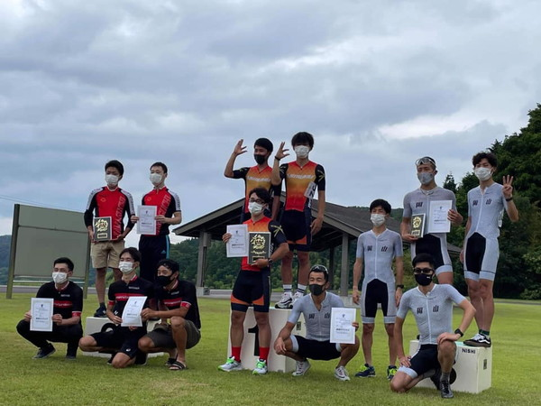
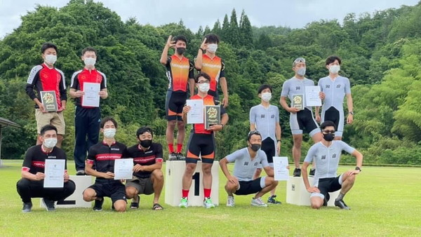
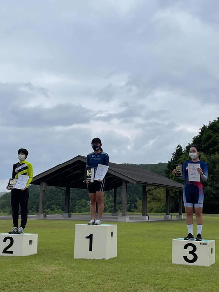
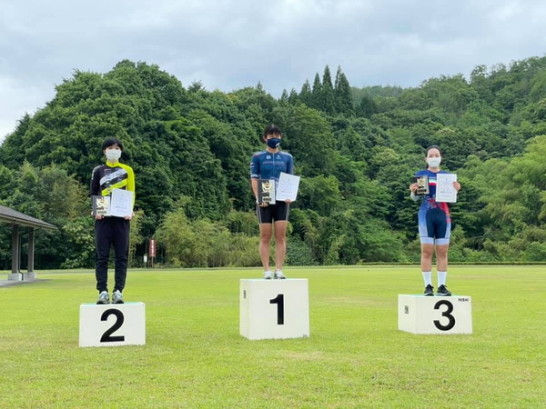
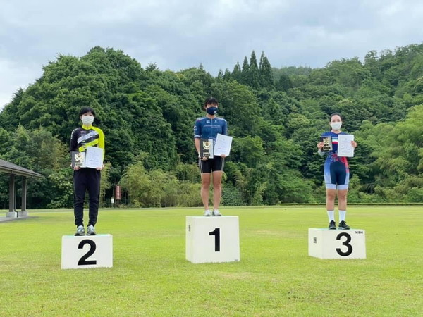
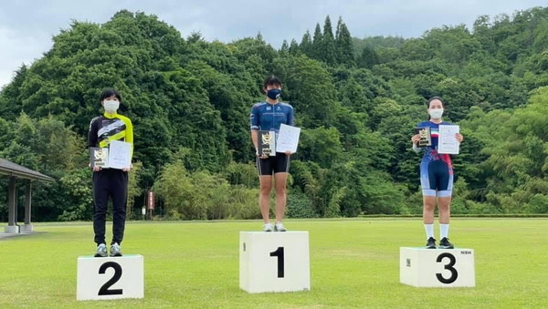
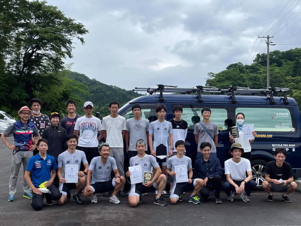
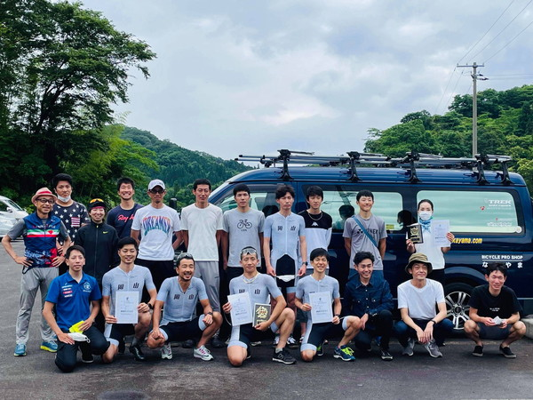
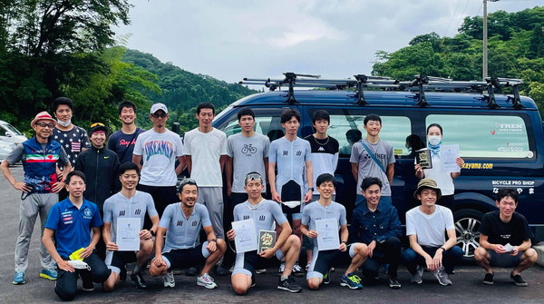
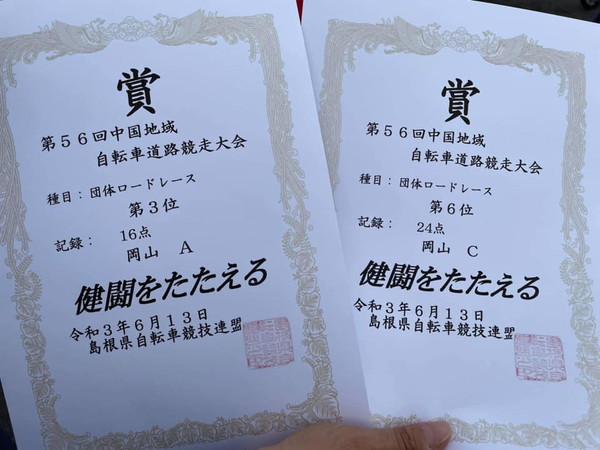
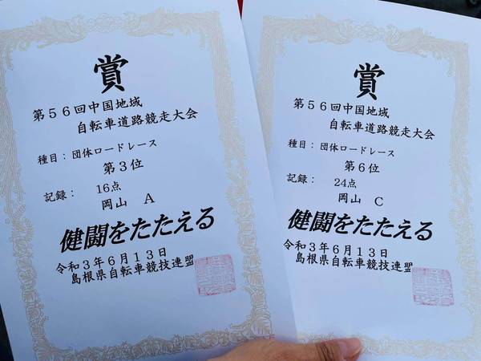
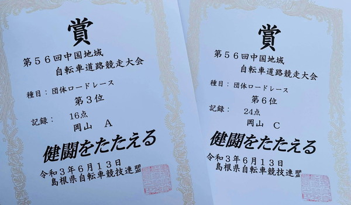
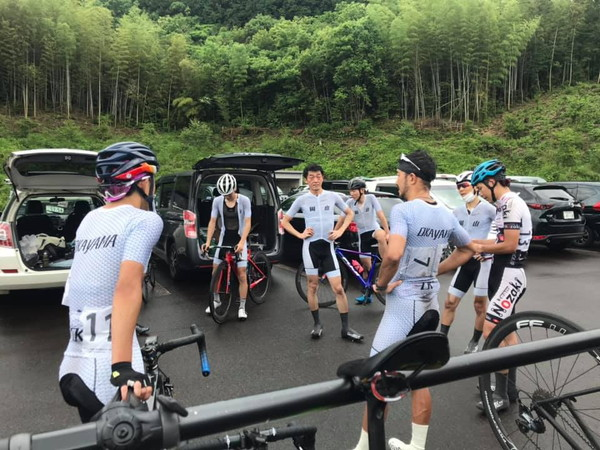
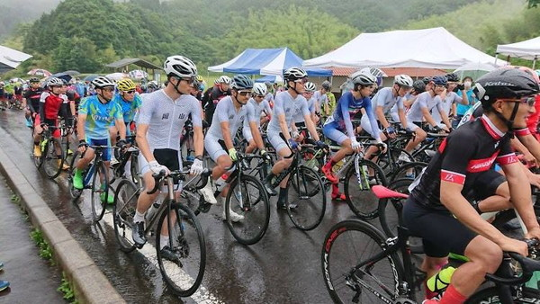
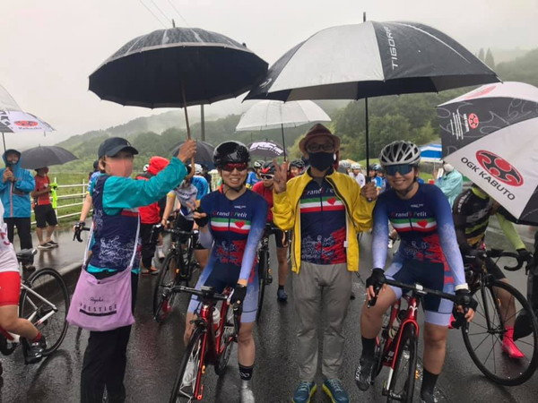
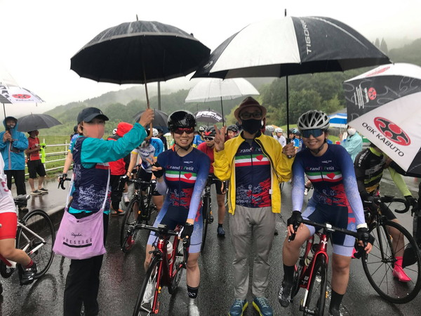
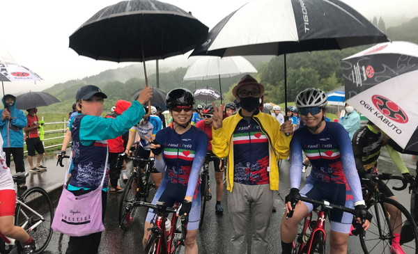
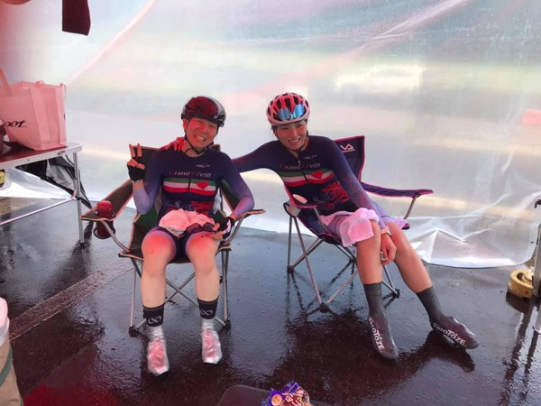
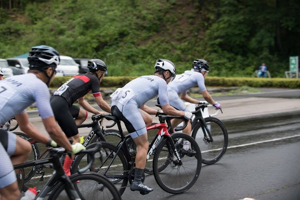
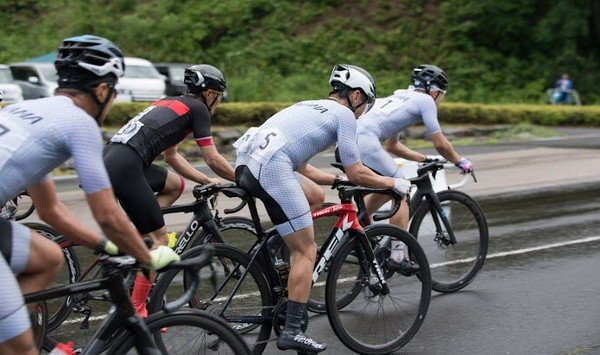
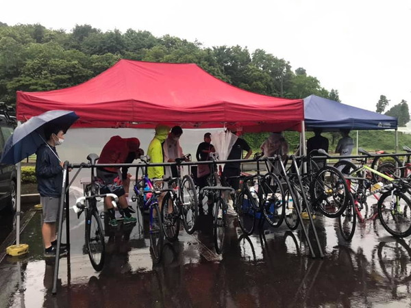
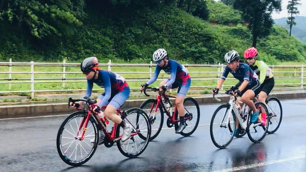
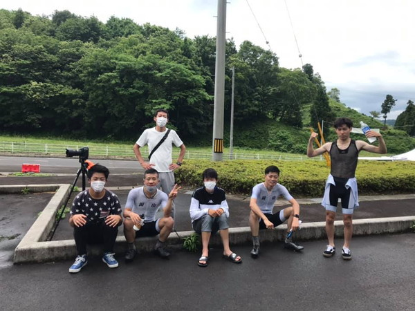
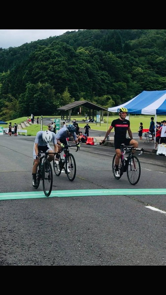
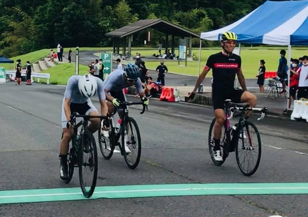
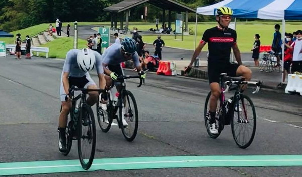
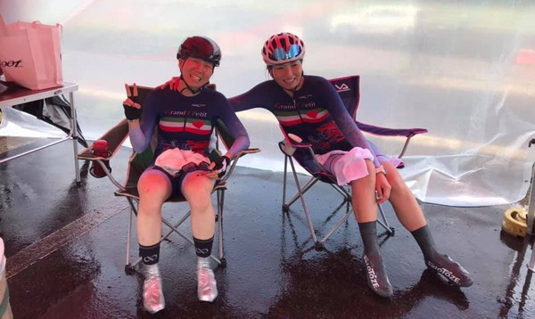
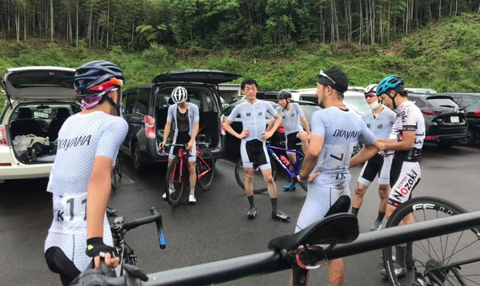
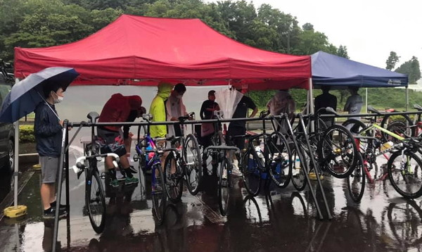

{kind=link}
{kind=link}
{kind=link}
{kind=link}
{kind=link}
{kind=link}
{kind=link}
{kind=link}
{kind=link}
{kind=link}
{kind=link}
{kind=link}
{kind=link}
{kind=link}
{kind=link}
{kind=link}
{kind=link}
{kind=link}
{kind=link}
{kind=link}
{kind=link}
{kind=link}
{kind=link}
{kind=link}
{kind=link}
{kind=link}
{kind=link}
{kind=link}
{kind=link}